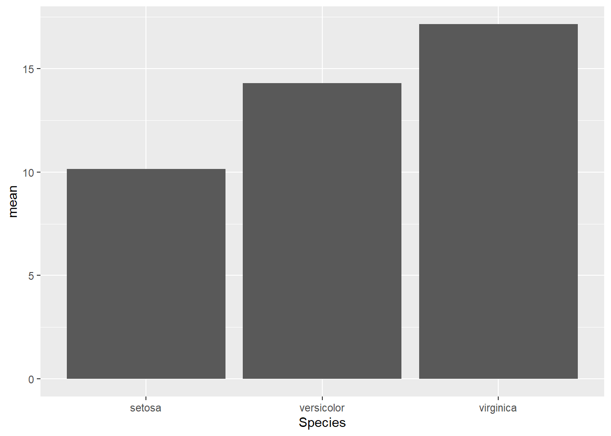
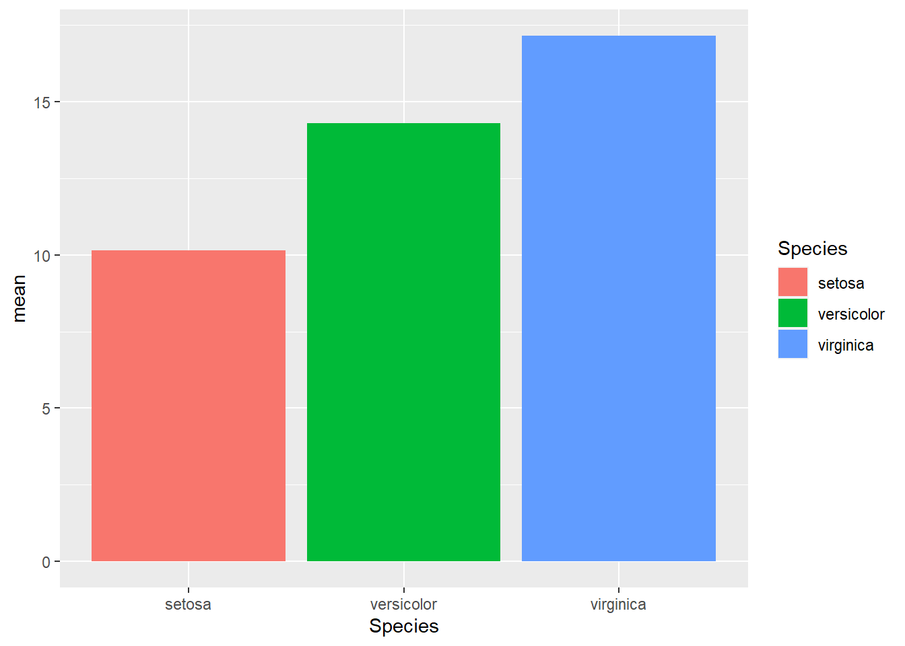
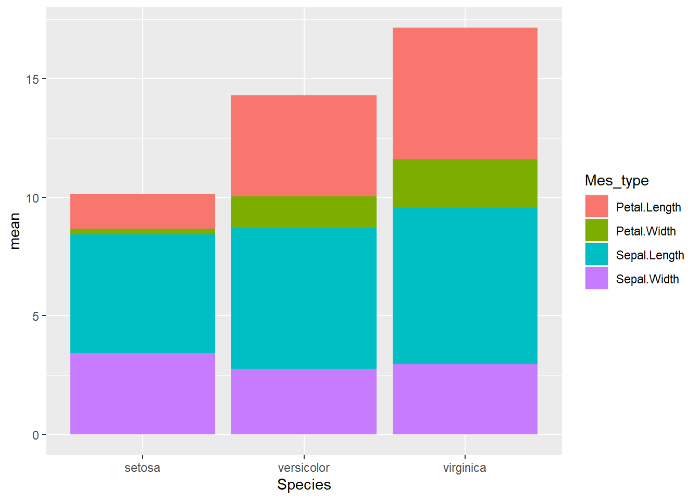
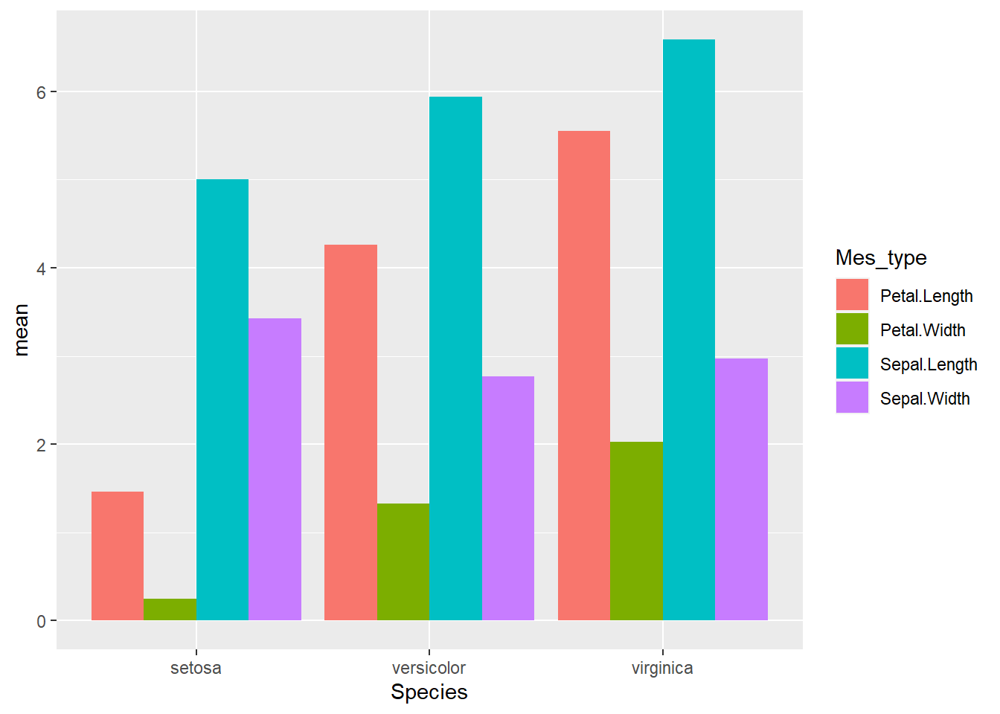
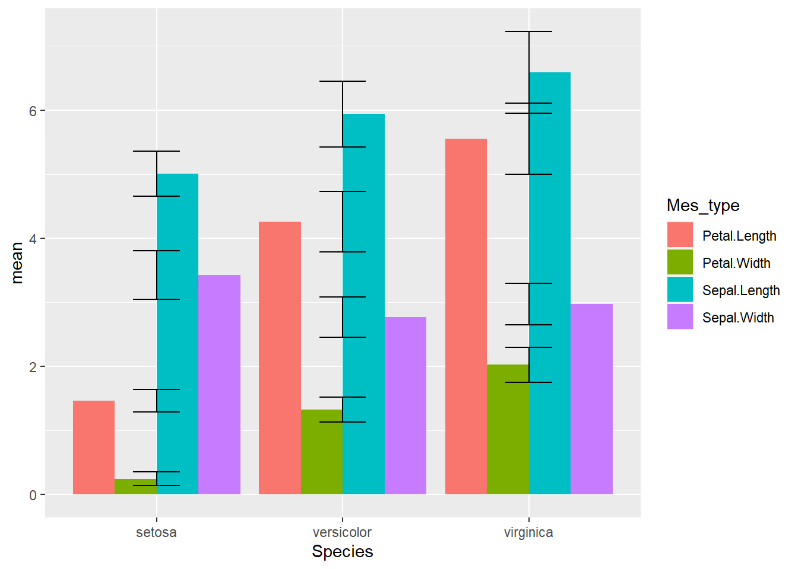
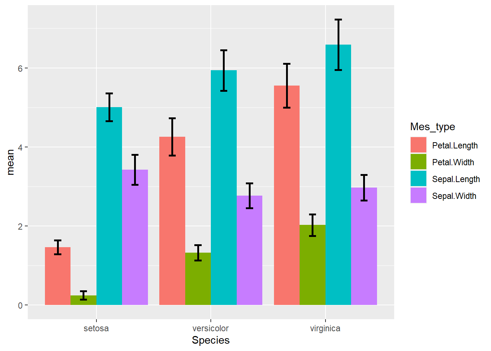
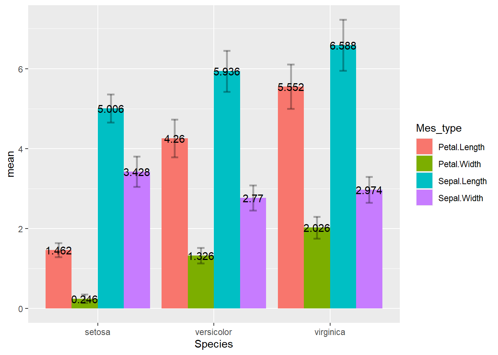
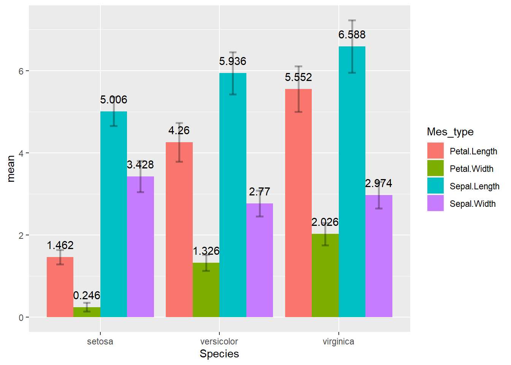
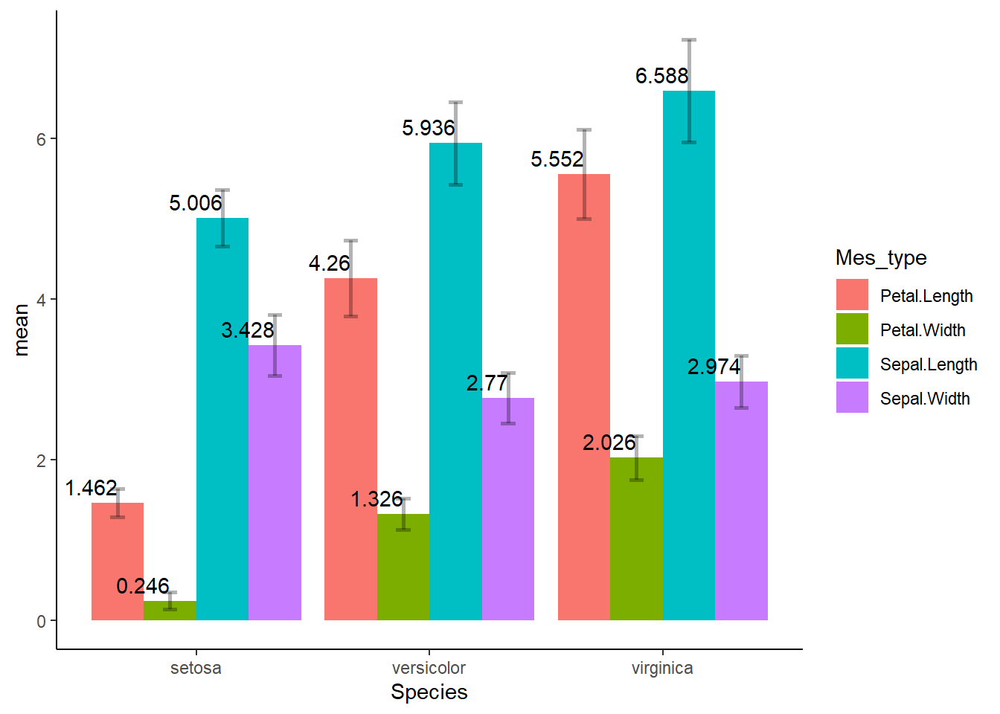
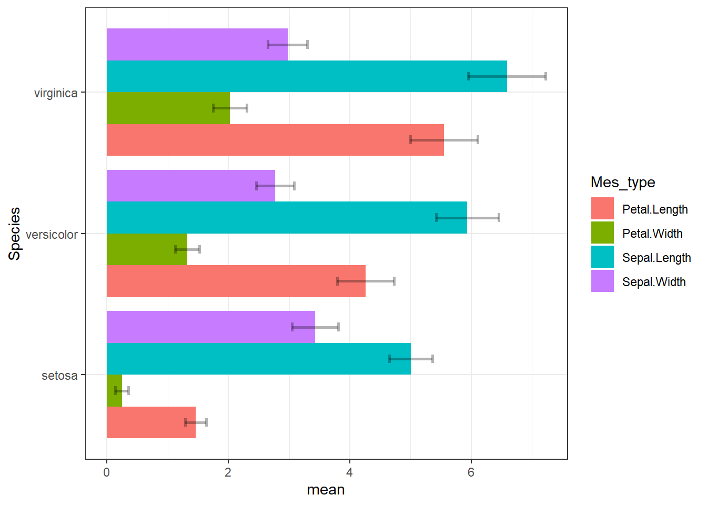

Week 9 actual path D:workin may
setwd("C:/Users/Hello People/Desktop/AMA SY 21-22 2ND SEM/datanal") # to set working directory
getwd() # to see which is our working directory## [1] "C:/Users/Hello People/Desktop/AMA SY 21-22 2ND SEM/datanal"# reading data from CSV or excel file
#read.csv() function
df= read.csv("iris.csv")
head(df)## Sepal.Length Sepal.Width Petal.Length Petal.Width Species
## 1 5.1 3.5 1.4 0.2 setosa
## 2 4.9 3.0 1.4 0.2 setosa
## 3 4.7 3.2 1.3 0.2 setosa
## 4 4.6 3.1 1.5 0.2 setosa
## 5 5.0 3.6 1.4 0.2 setosa
## 6 5.4 3.9 1.7 0.4 setosasummary(df)## Sepal.Length Sepal.Width Petal.Length Petal.Width
## Min. :4.300 Min. :2.000 Min. :1.000 Min. :0.100
## 1st Qu.:5.100 1st Qu.:2.800 1st Qu.:1.600 1st Qu.:0.300
## Median :5.800 Median :3.000 Median :4.350 Median :1.300
## Mean :5.843 Mean :3.057 Mean :3.758 Mean :1.199
## 3rd Qu.:6.400 3rd Qu.:3.300 3rd Qu.:5.100 3rd Qu.:1.800
## Max. :7.900 Max. :4.400 Max. :6.900 Max. :2.500
## Species
## Length:150
## Class :character
## Mode :character
##
##
## str(df)## 'data.frame': 150 obs. of 5 variables:
## $ Sepal.Length: num 5.1 4.9 4.7 4.6 5 5.4 4.6 5 4.4 4.9 ...
## $ Sepal.Width : num 3.5 3 3.2 3.1 3.6 3.9 3.4 3.4 2.9 3.1 ...
## $ Petal.Length: num 1.4 1.4 1.3 1.5 1.4 1.7 1.4 1.5 1.4 1.5 ...
## $ Petal.Width : num 0.2 0.2 0.2 0.2 0.2 0.4 0.3 0.2 0.2 0.1 ...
## $ Species : chr "setosa" "setosa" "setosa" "setosa" ...#read.xlsx() function
df1= readxl::read_xlsx("iris.xlsx")
head(df1)## # A tibble: 6 x 5
## Sepal.Length Sepal.Width Petal.Length Petal.Width Species
## <dbl> <dbl> <dbl> <dbl> <chr>
## 1 5.1 3.5 1.4 0.2 setosa
## 2 4.9 3 1.4 0.2 setosa
## 3 4.7 3.2 1.3 0.2 setosa
## 4 4.6 3.1 1.5 0.2 setosa
## 5 5 3.6 1.4 0.2 setosa
## 6 5.4 3.9 1.7 0.4 setosasummary(df1)## Sepal.Length Sepal.Width Petal.Length Petal.Width
## Min. :4.300 Min. :2.000 Min. :1.000 Min. :0.100
## 1st Qu.:5.100 1st Qu.:2.800 1st Qu.:1.600 1st Qu.:0.300
## Median :5.800 Median :3.000 Median :4.350 Median :1.300
## Mean :5.843 Mean :3.057 Mean :3.758 Mean :1.199
## 3rd Qu.:6.400 3rd Qu.:3.300 3rd Qu.:5.100 3rd Qu.:1.800
## Max. :7.900 Max. :4.400 Max. :6.900 Max. :2.500
## Species
## Length:150
## Class :character
## Mode :character
##
##
## str(df1)## tibble [150 x 5] (S3: tbl_df/tbl/data.frame)
## $ Sepal.Length: num [1:150] 5.1 4.9 4.7 4.6 5 5.4 4.6 5 4.4 4.9 ...
## $ Sepal.Width : num [1:150] 3.5 3 3.2 3.1 3.6 3.9 3.4 3.4 2.9 3.1 ...
## $ Petal.Length: num [1:150] 1.4 1.4 1.3 1.5 1.4 1.7 1.4 1.5 1.4 1.5 ...
## $ Petal.Width : num [1:150] 0.2 0.2 0.2 0.2 0.2 0.4 0.3 0.2 0.2 0.1 ...
## $ Species : chr [1:150] "setosa" "setosa" "setosa" "setosa" ...# if your data is in specific sheet of excel workbook
df2= readxl::read_xlsx("iris.xlsx",sheet="iris")
head(df2)## # A tibble: 6 x 5
## Sepal.Length Sepal.Width Petal.Length Petal.Width Species
## <dbl> <dbl> <dbl> <dbl> <chr>
## 1 5.1 3.5 1.4 0.2 setosa
## 2 4.9 3 1.4 0.2 setosa
## 3 4.7 3.2 1.3 0.2 setosa
## 4 4.6 3.1 1.5 0.2 setosa
## 5 5 3.6 1.4 0.2 setosa
## 6 5.4 3.9 1.7 0.4 setosasummary(df2)## Sepal.Length Sepal.Width Petal.Length Petal.Width
## Min. :4.300 Min. :2.000 Min. :1.000 Min. :0.100
## 1st Qu.:5.100 1st Qu.:2.800 1st Qu.:1.600 1st Qu.:0.300
## Median :5.800 Median :3.000 Median :4.350 Median :1.300
## Mean :5.843 Mean :3.057 Mean :3.758 Mean :1.199
## 3rd Qu.:6.400 3rd Qu.:3.300 3rd Qu.:5.100 3rd Qu.:1.800
## Max. :7.900 Max. :4.400 Max. :6.900 Max. :2.500
## Species
## Length:150
## Class :character
## Mode :character
##
##
## str(df2)## tibble [150 x 5] (S3: tbl_df/tbl/data.frame)
## $ Sepal.Length: num [1:150] 5.1 4.9 4.7 4.6 5 5.4 4.6 5 4.4 4.9 ...
## $ Sepal.Width : num [1:150] 3.5 3 3.2 3.1 3.6 3.9 3.4 3.4 2.9 3.1 ...
## $ Petal.Length: num [1:150] 1.4 1.4 1.3 1.5 1.4 1.7 1.4 1.5 1.4 1.5 ...
## $ Petal.Width : num [1:150] 0.2 0.2 0.2 0.2 0.2 0.4 0.3 0.2 0.2 0.1 ...
## $ Species : chr [1:150] "setosa" "setosa" "setosa" "setosa" ...# for the function below we need tidyverse package
library(tidyverse)## -- Attaching packages --------------------------------------- tidyverse 1.3.1 --## v tibble 3.1.6 v forcats 0.5.1
## v purrr 0.3.4## -- Conflicts ------------------------------------------ tidyverse_conflicts() --
## x lubridate::as.difftime() masks base::as.difftime()
## x lubridate::date() masks base::date()
## x dplyr::filter() masks stats::filter()
## x lubridate::intersect() masks base::intersect()
## x dplyr::lag() masks stats::lag()
## x lubridate::setdiff() masks base::setdiff()
## x lubridate::union() masks base::union()# Selecting column
df_f4= select(df,-5)
head(df_f4)## Sepal.Length Sepal.Width Petal.Length Petal.Width
## 1 5.1 3.5 1.4 0.2
## 2 4.9 3.0 1.4 0.2
## 3 4.7 3.2 1.3 0.2
## 4 4.6 3.1 1.5 0.2
## 5 5.0 3.6 1.4 0.2
## 6 5.4 3.9 1.7 0.4# filtering rows
df_setosa= filter(df,Species=="setosa")
head(df_setosa)## Sepal.Length Sepal.Width Petal.Length Petal.Width Species
## 1 5.1 3.5 1.4 0.2 setosa
## 2 4.9 3.0 1.4 0.2 setosa
## 3 4.7 3.2 1.3 0.2 setosa
## 4 4.6 3.1 1.5 0.2 setosa
## 5 5.0 3.6 1.4 0.2 setosa
## 6 5.4 3.9 1.7 0.4 setosadim(df_setosa)## [1] 50 5df_virginica= filter(df,Species=="virginica")
head(df_virginica)## Sepal.Length Sepal.Width Petal.Length Petal.Width Species
## 1 6.3 3.3 6.0 2.5 virginica
## 2 5.8 2.7 5.1 1.9 virginica
## 3 7.1 3.0 5.9 2.1 virginica
## 4 6.3 2.9 5.6 1.8 virginica
## 5 6.5 3.0 5.8 2.2 virginica
## 6 7.6 3.0 6.6 2.1 virginicadim(df_virginica)## [1] 50 5# gathering columns to make long table
df_long= gather(df,Mes_type,length,1:4)
head(df_long)## Species Mes_type length
## 1 setosa Sepal.Length 5.1
## 2 setosa Sepal.Length 4.9
## 3 setosa Sepal.Length 4.7
## 4 setosa Sepal.Length 4.6
## 5 setosa Sepal.Length 5.0
## 6 setosa Sepal.Length 5.4#grouping and summarizing data
# group by
df_sumzd=group_by(df_long,Species)
head(df_sumzd)## # A tibble: 6 x 3
## # Groups: Species [1]
## Species Mes_type length
## <chr> <chr> <dbl>
## 1 setosa Sepal.Length 5.1
## 2 setosa Sepal.Length 4.9
## 3 setosa Sepal.Length 4.7
## 4 setosa Sepal.Length 4.6
## 5 setosa Sepal.Length 5
## 6 setosa Sepal.Length 5.4#Summarize
df_sumzd=group_by(df_long,Species,Mes_type) %>% summarise(mean=mean(length),sd=sd(length))## `summarise()` has grouped output by 'Species'. You can override using the `.groups` argument.head(df_sumzd)## # A tibble: 6 x 4
## # Groups: Species [2]
## Species Mes_type mean sd
## <chr> <chr> <dbl> <dbl>
## 1 setosa Petal.Length 1.46 0.174
## 2 setosa Petal.Width 0.246 0.105
## 3 setosa Sepal.Length 5.01 0.352
## 4 setosa Sepal.Width 3.43 0.379
## 5 versicolor Petal.Length 4.26 0.470
## 6 versicolor Petal.Width 1.33 0.198# Plot basic barplot
#p=ggplot(df_sumzd,aes(x=Species,y=mean))+geom_bar()
#p# Plot basic barplot- effect of stat= "identity"
p=ggplot(df_sumzd,aes(x=Species,y=mean))+
geom_bar(stat="identity")
p
# fill color
p=ggplot(df_sumzd,aes(x=Species,y=mean))+
geom_bar(stat="identity",fill="red")
p
p=ggplot(df_sumzd,aes(x=Species,y=mean, fill=Species))+
geom_bar(stat="identity")
p
# fill color - mapping to a variable
# fill colors- stacked bar plot
p=ggplot(df_sumzd,aes(x=Species,y=mean,fill=Mes_type))+
geom_bar(stat="identity")
p
# fill colors- grouped bar plot
p=ggplot(df_sumzd,aes(x=Species,y=mean,fill=Mes_type))+
geom_bar(stat="identity",position="dodge")
p
#Error bars
p=ggplot(df_sumzd,aes(x=Species,y=mean,fill=Mes_type))+
geom_bar(stat="identity",position="dodge") +
geom_errorbar(aes(ymin=mean-sd,ymax=mean+sd))
p#Error bars width
p=ggplot(df_sumzd,aes(x=Species,y=mean,fill=Mes_type))+
geom_bar(stat="identity",position="dodge") +
geom_errorbar(aes(ymin=mean-sd,ymax=mean+sd),width=0.25)
p
#Error bars width, size,position
p=ggplot(df_sumzd,aes(x=Species,y=mean,fill=Mes_type))+
geom_bar(stat="identity",position="dodge") +
geom_errorbar(aes(ymin=mean-sd,ymax=mean+sd),width=0.25,
size=1,position= position_dodge(0.9))
p
#Error bars width,size, position, alpha
p=ggplot(df_sumzd,aes(x=Species,y=mean,fill=Mes_type))+
geom_bar(stat="identity",position="dodge") +
geom_errorbar(aes(ymin=mean-sd,ymax=mean+sd),width=0.25,
size=1,position= position_dodge(0.9),alpha=0.3)
p
#Error bars width,size, position, alpha and labels
p=ggplot(df_sumzd,aes(x=Species,y=mean,fill=Mes_type,label=mean))+
geom_bar(stat="identity",position="dodge") +
geom_errorbar(aes(ymin=mean-sd,ymax=mean+sd),width=0.25,
size=1,position= position_dodge(0.9), alpha=0.3)
p
#Error bars width,size, position, alpha and labels
p=ggplot(df_sumzd,aes(x=Species,y=mean,fill=Mes_type,label=mean))+
geom_bar(stat="identity",position="dodge") +
geom_errorbar(aes(ymin=mean-sd,ymax=mean+sd),width=0.25,
size=1,position= position_dodge(0.9), alpha=0.3)+
geom_text(position=position_dodge(0.9))
p
#Error bars width,size, position, alpha and labels, label position corrected
p=ggplot(df_sumzd,aes(x=Species,y=mean,fill=Mes_type,label=mean))+
geom_bar(stat="identity",position="dodge") +
geom_errorbar(aes(ymin=mean-sd,ymax=mean+sd),width=0.25,
size=1,position= position_dodge(0.9), alpha=0.3)+
geom_text(position=position_dodge(0.9),vjust=-1)
p
#Error bars width,size, position, alpha and labels, label position more corrected
p=ggplot(df_sumzd,aes(x=Species,y=mean,fill=Mes_type,label=mean))+
geom_bar(stat="identity",position="dodge") +
geom_errorbar(aes(ymin=mean-sd,ymax=mean+sd),width=0.25,
size=1,position= position_dodge(0.9), alpha=0.3)+
geom_text(position=position_dodge(0.9),vjust=-0.5, hjust=1.2)
p#theme classic
p=ggplot(df_sumzd,aes(x=Species,y=mean,fill=Mes_type,label=mean))+
geom_bar(stat="identity",position="dodge") +
geom_errorbar(aes(ymin=mean-sd,ymax=mean+sd),width=0.25,
size=1,position= position_dodge(0.9), alpha=0.3)+
geom_text(position=position_dodge(0.9),vjust=-0.5, hjust=1)+
theme_classic()
p
#theme bw
p=ggplot(df_sumzd,aes(x=Species,y=mean,fill=Mes_type,label=mean))+
geom_bar(stat="identity",position="dodge") +
geom_errorbar(aes(ymin=mean-sd,ymax=mean+sd),width=0.25,
size=1,position= position_dodge(0.9), alpha=0.3)+
geom_text(position=position_dodge(0.9),vjust=-0.5, hjust=1.1)+
theme_bw()
p
# I don't like this plot.
p=ggplot(df_sumzd,aes(x=Species,y=mean,fill=Mes_type))+
geom_bar(stat="identity",position="dodge") +
geom_errorbar(aes(ymin=mean-sd,ymax=mean+sd),width=0.25,
size=1,position= position_dodge(0.9), alpha=0.3)+
theme_bw()
p
# coord flip, this to when x axis labels are very long and overlap each other
p=ggplot(df_sumzd,aes(x=Species,y=mean,fill=Mes_type))+
geom_bar(stat="identity",position="dodge") +
geom_errorbar(aes(ymin=mean-sd,ymax=mean+sd),width=0.25,
size=1,position= position_dodge(0.9), alpha=0.3)+
theme_bw()+
coord_flip()
p
#That’s it for bar plot.